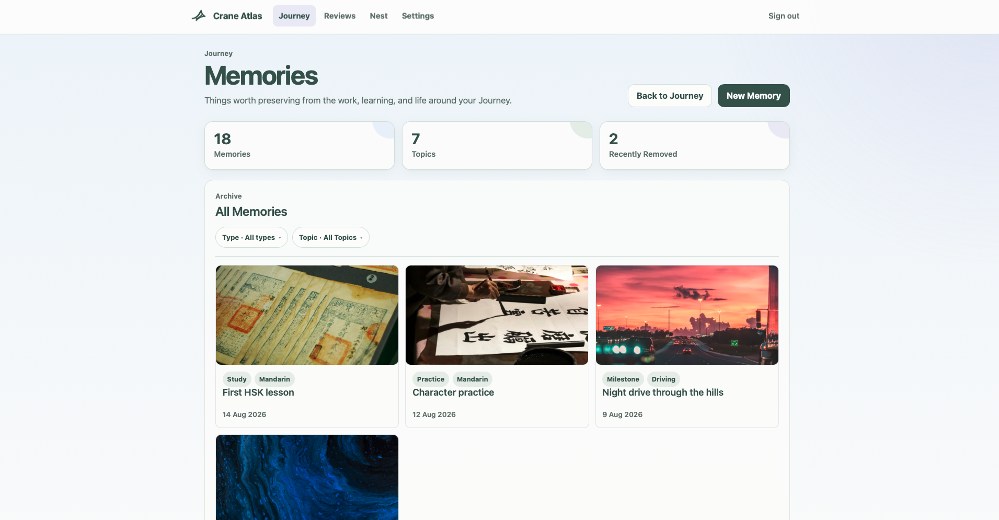
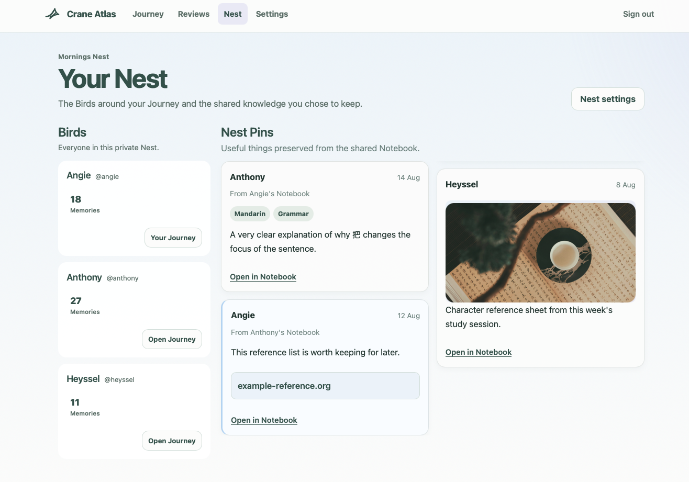
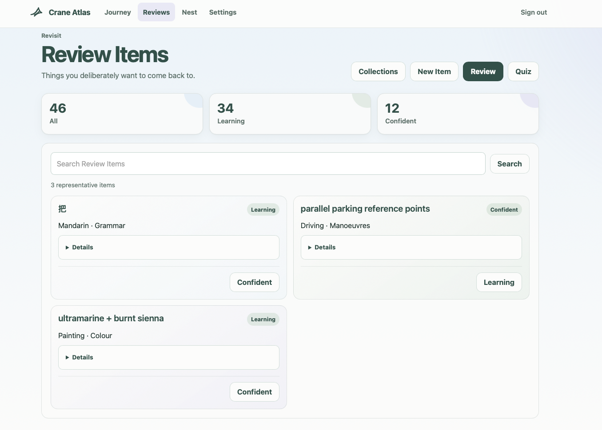

Crane Atlas began as a small idea: a private place where learning could leave a history.
I wanted somewhere to keep the moments around learning rather than only the result. A useful note, a photograph of a workbook, a milestone, a difficult week, a resource worth keeping, or something another trusted person wanted to remember with you. Mandarin was the first real Journey, but it was never meant to define the product. But then the idea grew into a much larger Flask application
The final hosted version had accounts called Birds, private shared spaces called Nests, chronological Journeys, preserved Memories, a shared Notebook, curated Nest Pins, and lightweight Reviews for material worth revisiting.

Memories
The application also accumulated the infrastructure expected of a real hosted service: SQLite persistence, image handling, authentication, email verification, password recovery, abuse protection, account recovery, Docker deployment, reverse proxy configuration, transactional email, and a growing automated test suite (168... I was even testing HTML templates, better safe than sorry.) It was all helpful though, as it forced product ideas to survive contact with architecture.
Some concepts became stronger as they were implemented while others were removed. For instance, the Notebook became intentionally different from Memories. Nests stopped resembling classrooms and became small private spaces without ranks. Review tools stayed secondary instead of turning the application into a flashcard product. The Journey remained chronological because the history itself was the point.

Nest
A principle that helped me reject a lot of features that would have made the project busier without making it better was "preserve meaningful history rather than every application action." A Nest did not need a social feed. Birds did not need scores. Supporting another person did not require a teacher role. Review activity did not need to be public. Topics could organize material without becoming a rigid hierarchy.
By the time the application was approaching a public launch, the project had also become a real production service to operate.
That meant mail delivery, server administration, public abuse protection, DNS, certificates, deployment pipelines, account recovery, legal pages, and infrastructure subscriptions. None of those things were mistakes; building them taught me a great deal. But maintaining them had become a separate commitment from the part of Crane Atlas I actually wanted to keep.

Reviews
So I retired the large hosted version before turning it into another permanent service obligation.
The repository remains the complete engineering artifact. A static UI representation remains available as a demonstration of the finished product. The infrastructure around it does not need to remain online forever for the work to count.
The interesting part is that Crane Atlas did not disappear. A much smaller private version did survive for the handful of people it was originally closest to serving, and best of all, that version can remain tiny. It does not need public registration, transactional email, a launch funnel, or the operational surface area of a public web service.
The large version taught me what the product could become, and the smaller one clarified what actually needed to remain. Quite honestly, a very clear ending and closing chapter.
Product-wise Technically, Crane Atlas gave me sustained practice with Flask application architecture, SQLite ownership rules, authentication flows, image handling, email systems, rate limiting, Docker deployment, testing, and iterative schema design. Product-wise, it kept on reminding me something more useful: implementation is a form of editing. Building a feature is often the fastest way to discover that it should be smaller, simpler, moved somewhere else, or removed entirely.
Crane Atlas changed repeatedly because I let the real application argue with the original idea.
That was the project.